library(limma)
library(edgeR)
library(tidyverse)
library(airway)
set.seed(20260923)Introduction to Differential Expression Analysis
BME780 Guest Lecture
Motivation
Comparison is fundamental to biological discovery. In the sequencing era, our comparisons are often based on large-scale molecular readouts.
- In functional genomics, we compare molecular profiles before and after knocking out genes.
- In cancer biology, we compare molecular profiles in cancer versus healthy tissue.
- In microbiome studies, we compare microbial species communities before and after treatments.
- In single cell eQTL studies, we look for cell-type-specific expression profiles that differs across genotypes.
Viewed more abstractly, this is a problem of comparing the frequency of genomic features across conditions, potentially accounting for secondary factors, like timepoints or patient characteristics, that can also influence the observed frequencies.
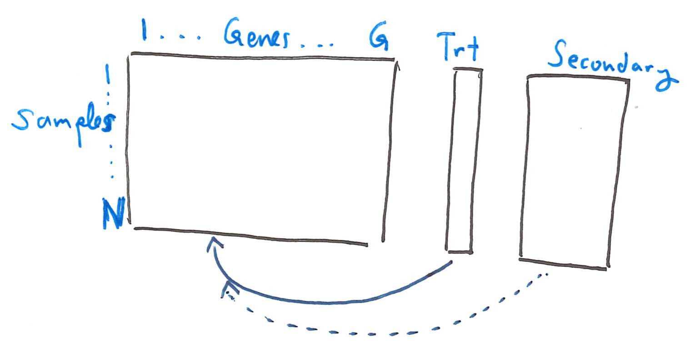
The overarching goal of differential expression analysis is to identify genomic features that vary systematically across conditions of interest. From an analysis perspective, there are two fundamental challenges:
- The “usual” statistical assumptions do not immediately apply.
- There may be thousands of features of potential interest. The more we analyze, the greater the risk that irrelevant features appear associated just by chance.
The first problem motivates normalization methods, and the second motivates multiple hypothesis testing methods. There have been many proposals for both normalization and multiple hypothesis testing. We will focus on the specific procedure adopted by limma, though many of the ideas of this approach appear throughout the literature.
Example
Before diving more deeply into the statistics, let’s look at a prawctical code example using the limma package. The block below loads our software packages and sets a random number seed for reproducibility.
We’ll analyze the airway dataset, which comes from an RNA-seq experiment of how gene expression profiles change in smooth muscle tissue treated with dexamethasone. The data come from four cell lines, and for each line, there are paired treatment and control samples.
data(airway) airwayclass: RangedSummarizedExperiment dim: 63677 8 metadata(1): '' assays(1): counts rownames(63677): ENSG00000000003 ENSG00000000005 ... ENSG00000273492 ENSG00000273493 rowData names(10): gene_id gene_name ... seq_coord_system symbol colnames(8): SRR1039508 SRR1039509 ... SRR1039520 SRR1039521 colData names(9): SampleName cell ... Sample BioSampleThis experiment object includes counts and context. The
assayslot includes the counts of each gene transcript across the measured samples. TherowDataandcolDataslots include contextual data about the genes and samples, respectively.
This object was assembled by the
airwaypackage, but in practice, we would create our own using theSummarizedExperimentfunction, whose inputs are the counts matrix and the contextual data about each sample and gene. For any regression models that we run below, we will need the relevant variables to be defined as column names in thecolData.head(colData(airway))DataFrame with 6 rows and 9 columns SampleName cell dex albut Run avgLength <factor> <factor> <factor> <factor> <factor> <integer> SRR1039508 GSM1275862 N61311 untrt untrt SRR1039508 126 SRR1039509 GSM1275863 N61311 trt untrt SRR1039509 126 SRR1039512 GSM1275866 N052611 untrt untrt SRR1039512 126 SRR1039513 GSM1275867 N052611 trt untrt SRR1039513 87 SRR1039516 GSM1275870 N080611 untrt untrt SRR1039516 120 SRR1039517 GSM1275871 N080611 trt untrt SRR1039517 126 Experiment Sample BioSample <factor> <factor> <factor> SRR1039508 SRX384345 SRS508568 SAMN02422669 SRR1039509 SRX384346 SRS508567 SAMN02422675 SRR1039512 SRX384349 SRS508571 SAMN02422678 SRR1039513 SRX384350 SRS508572 SAMN02422670 SRR1039516 SRX384353 SRS508575 SAMN02422682 SRR1039517 SRX384354 SRS508576 SAMN02422673head(rowData(airway))DataFrame with 6 rows and 10 columns gene_id gene_name entrezid gene_biotype <character> <character> <integer> <character> ENSG00000000003 ENSG00000000003 TSPAN6 NA protein_coding ENSG00000000005 ENSG00000000005 TNMD NA protein_coding ENSG00000000419 ENSG00000000419 DPM1 NA protein_coding ENSG00000000457 ENSG00000000457 SCYL3 NA protein_coding ENSG00000000460 ENSG00000000460 C1orf112 NA protein_coding ENSG00000000938 ENSG00000000938 FGR NA protein_coding gene_seq_start gene_seq_end seq_name seq_strand <integer> <integer> <character> <integer> ENSG00000000003 99883667 99894988 X -1 ENSG00000000005 99839799 99854882 X 1 ENSG00000000419 49551404 49575092 20 -1 ENSG00000000457 169818772 169863408 1 -1 ENSG00000000460 169631245 169823221 1 1 ENSG00000000938 27938575 27961788 1 -1 seq_coord_system symbol <integer> <character> ENSG00000000003 NA TSPAN6 ENSG00000000005 NA TNMD ENSG00000000419 NA DPM1 ENSG00000000457 NA SCYL3 ENSG00000000460 NA C1orf112 ENSG00000000938 NA FGRassay(airway)[1:4, 1:4]SRR1039508 SRR1039509 SRR1039512 SRR1039513 ENSG00000000003 679 448 873 408 ENSG00000000005 0 0 0 0 ENSG00000000419 467 515 621 365 ENSG00000000457 260 211 263 164The first line below makes sure that
untrtis the reference level, so a positive \(t\)-statistic is interpreted as the treatment being larger than the control. Limma expects the experiment object to be stored in aDGEList(“differential gene expression list”), which reorganizes the counts and context present in the original experiment object. TheSE2DGEListfunction converts fromSummarizedExperimenttoDGEList.airway$dex <- relevel(airway$dex, ref = "untrt") dge <- SE2DGEList(airway)We next filter genes that are expressed at very low levels. The commands that follow normalize the data, which we discuss in detail below. The most important part of this code block is that
model.matrixspecifies the factors that influence gene expression. Here, both the cell line and the dexamethasone status are allowed to influence gene expression levels. This is encoded in the formula object~ cell + dex. Both variables were columns in thecolDataslot of our original experiment.keep <- filterByExpr(dge, group = dge$samples$dex) dge <- normLibSizes(dge[keep, ]) design <- model.matrix(~ cell + dex, data = dge$samples) v <- voom(dge, design, save.plot = TRUE)We use the output from normalization as input for hypothesis testing. The
topTableoutput shows genes that limma declares to be the most significantly different between dexamethasone and control settings. My point in showing the code here is that even though the statistical discussion below might seem long, the actual implementation is only a few lines.fit_raw <- lmFit(v, design) fit <- eBayes(fit_raw) topTable(fit, coef = "dextrt")gene_id gene_name entrezid gene_biotype ENSG00000165995 ENSG00000165995 CACNB2 NA protein_coding ENSG00000120129 ENSG00000120129 DUSP1 NA protein_coding ENSG00000157214 ENSG00000157214 STEAP2 NA protein_coding ENSG00000162493 ENSG00000162493 PDPN NA protein_coding ENSG00000189221 ENSG00000189221 MAOA NA protein_coding ENSG00000162614 ENSG00000162614 NEXN NA protein_coding ENSG00000101347 ENSG00000101347 SAMHD1 NA protein_coding ENSG00000125148 ENSG00000125148 MT2A NA protein_coding ENSG00000139132 ENSG00000139132 FGD4 NA protein_coding ENSG00000106976 ENSG00000106976 DNM1 NA protein_coding gene_seq_start gene_seq_end seq_name seq_strand ENSG00000165995 18429606 18830798 10 1 ENSG00000120129 172195093 172198198 5 -1 ENSG00000157214 89796904 89867451 7 1 ENSG00000162493 13909960 13944452 1 1 ENSG00000189221 43515467 43606068 X 1 ENSG00000162614 78354198 78409580 1 1 ENSG00000101347 35518632 35580246 20 -1 ENSG00000125148 56642111 56643409 16 1 ENSG00000139132 32552463 32798984 12 1 ENSG00000106976 130965658 131017527 9 1 seq_coord_system symbol logFC AveExpr t ENSG00000165995 NA CACNB2 3.278357 3.680801 33.82673 ENSG00000120129 NA DUSP1 2.938012 6.643013 28.39344 ENSG00000157214 NA STEAP2 1.967389 6.788567 27.55911 ENSG00000162493 NA PDPN 1.881003 5.187898 27.48959 ENSG00000189221 NA MAOA 3.330552 5.949117 26.78834 ENSG00000162614 NA NEXN 2.028100 7.636408 26.08350 ENSG00000101347 NA SAMHD1 3.755593 8.133814 25.62151 ENSG00000125148 NA MT2A 2.201202 7.022630 25.56297 ENSG00000139132 NA FGD4 2.221418 5.413899 25.31734 ENSG00000106976 NA DNM1 -1.766912 5.096501 -25.21379 P.Value adj.P.Val B ENSG00000165995 1.203221e-10 1.91625e-06 14.34587 ENSG00000120129 5.570210e-10 2.07043e-06 13.68992 ENSG00000157214 7.228166e-10 2.07043e-06 13.45660 ENSG00000162493 7.389372e-10 2.07043e-06 13.39575 ENSG00000189221 9.259452e-10 2.07043e-06 13.18925 ENSG00000162614 1.168492e-09 2.07043e-06 12.99405 ENSG00000101347 1.365561e-09 2.07043e-06 12.83329 ENSG00000125148 1.393067e-09 2.07043e-06 12.82876 ENSG00000139132 1.515402e-09 2.07043e-06 12.73254 ENSG00000106976 1.570514e-09 2.07043e-06 12.68717
Linear Models Background
The machinery that underlies both normalization and multiple hypothesis testing is the linear model. We briefly detour to review the mechanics of hypothesis testing through linear models. There will be math, but the math is necessary to make our understanding precise.
Let \(y_n\) represent gene expression levels across samples \(n\). Imagine that data come from two groups (e.g., healthy and disease, or knockout and control) and that are both Gaussian distributed. The groups may have different means \(\mu\) but are required to have the same variances \(\sigma^2\).
\[ \begin{align} y_{n} \sim \begin{cases} \mathcal{N}\left(\mu_{A}, \sigma^2\right) & \text{for } n \in \text{Group A} \\ \mathcal{N}\left(\mu_{B}, \sigma^2\right) & \text{for } n \in \text{Group B} \end{cases} \end{align} \]

If we want to see whether the true (unobserved) group means are the same, we can compute,
\[ t = \frac{\bar{y}_A - \bar{y}_B}{s\sqrt{1/N_A + 1/N_B}}. \]
This is the differences in observed means of groups A and B, adjusted according to an empirical estimate \(s^2\) of the within-group variance1. This adjustment accounts for the spread within each group when interpreting the difference in means.
We will say that when the means of the two groups are equal, the null hypothesis holds. The reason for the naming is that when the two groups have the same mean, there is no need to further examine subgroup differences (null \(\iff\) nothing more to look at). Formally, this is denoted,
\[H_{0}: \mu_{A} = \mu_{B}\]
Even when \(H_{0}\) holds, the observed difference in sample means will be nonzero on any actual dataset, and therefore \(t \neq 0\). In the plot below, the normal densities denote the true data distributions in each group, the points represent the observed data, and the horizontal lines reflect the observed sample means.
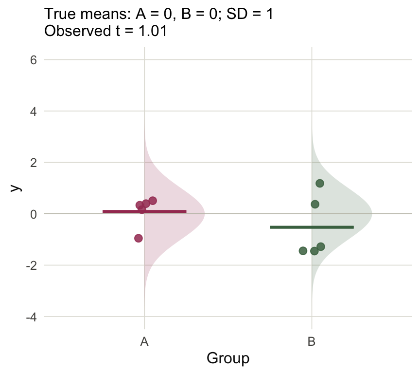
Figure 1 However, the further the statistic \(t\) is from zero (either negative or positive), the less plausible the null hypothesis \(H_0\) becomes. The example below is a case where \(H_{0}\) does not hold, and this is reflected in the relatively larger \(t\)-statistic.
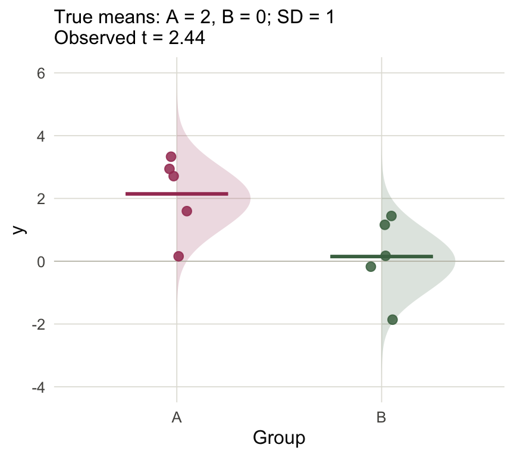
Figure 2 Under the null hypothesis \(H_{0}\), what would be typical values of \(t\)? We can answer this with a simulation. I’ve simulated 5K null datasets, computed the associated \(t\)-statistics, and put those statistics into a histogram. These turn out to follow a clean distribution2, and it’s in fact possible to derive a theoretical formula for it, which is overlaid.
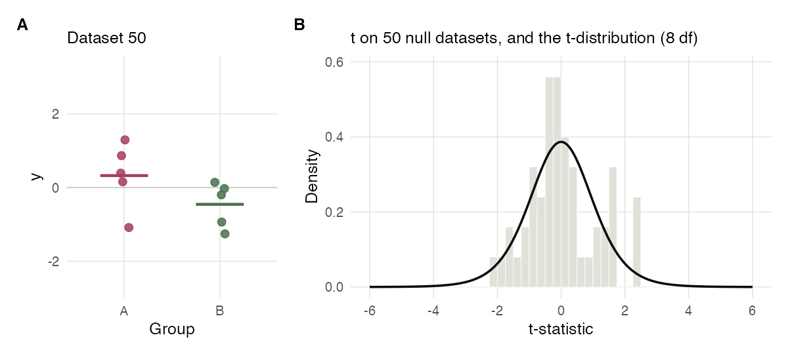
This is useful because it tells us that anything that doesn’t fall into this distribution is evidence against the null hypothesis. I generated one sample where the true group difference is 2 and I’ve overlaid the \(t\)-statistic from that dataset onto the null from before.
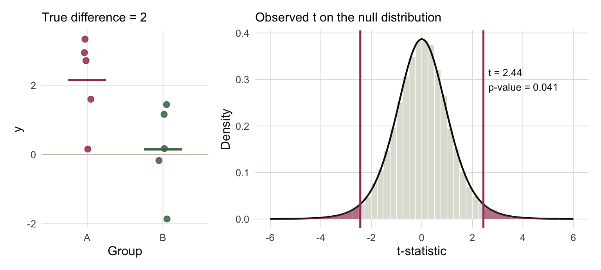
Figure 3 This is the essential logic of hypothesis testing: if we see a statistic that doesn’t fall into the bulk of the null distribution, then we have evidence that the null hypothesis is false. A \(p\)-value is defined as the area of the distribution with larger magnitude than the test statistic, and it is a measure of the strength of this evidence (smaller area \(\to\) less likely to come from the null).
So if we’re willing to believe the Gaussian assumption, we have a procedure for comparing means across two groups. But in genomics, we often want to analyze several factors at once, either because we have several treatments to give simultaneously or because we need to control for secondary factors. For many centuries, the guiding principle was to analyze one factor at a time, varying one but fixing all the others. This would mean working with separate subsets of data.
One of the major insights of statistics is that it can be beneficial to analyze multiple factors at once, because it allows you to share evidence across all subsets3. The idea is to proceed like in Figure 4, where we care about the difference between A and B, but the response is influenced by a secondary factor \(x_n\). If we subsampled into data within a narrow range of \(x_n\), then we would be discarding most of the information. Conversely, if we ignored this factor and only compared the \(y_n\) values, then the groups would become more blended and we would struggle to detect a difference.
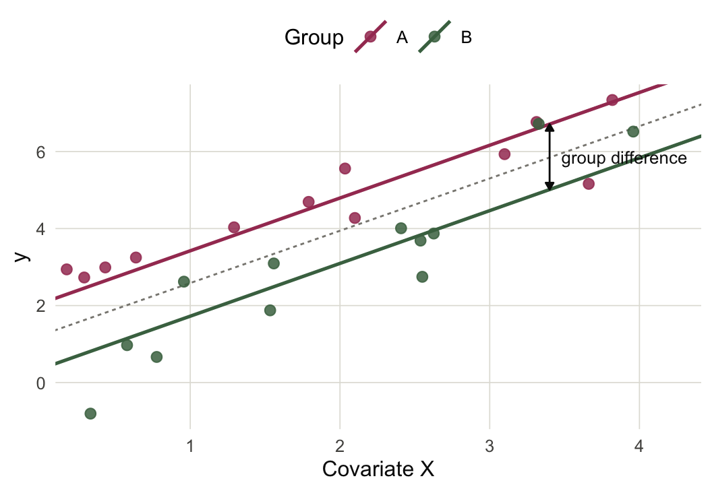
Figure 4 In this case we might want to test the null hypothesis \(H_{0}\) that the lines for the two groups are exactly overlapping. The main trick is to subtract out the effects from the \(x_n\) and see whether there still remains a difference between the two groups. That is, after subtracing the \(x_n\) effects, we return to the setting above.
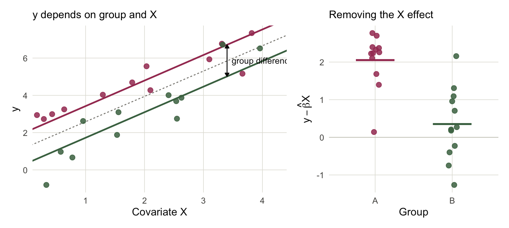
Figure 5 This is exactly what a linear model does. The formula becomes more complicated, but we can again derive a \(t\)-statistic that has a closed form null distribution under \(H_{0}\).
The fact that we can make comparisons between groups while accounting for the influence of many factors is what makes linear models such a versatile statistical method. The example here uses a straight line for \(x_n\) but the same machinery works generally, including when the effects are nonlinear, when the slopes of the lines are not parallel, and when we have a treatment with more than two levels.
Normalization
Unfortunately the Gaussian assumption doesn’t make sense for genomics data. But the literature has found ways to salvage their applicability. This is done is through a process called normalization, and it lies at the heart of limma.
There are two issues that stand in the way of making the Gaussian assumption. The first is that sequencing assays return counts of different genomic features, and these are not continuous measurements like the Gaussian. The second is that each sample’s mean can depend on its sequencing depth. Sequencing depth is a technical factor that can obscure the actual biological differences between conditions.
An idea that addresses both problems is the log counts-per-million (CPM) transformation. Suppose that the expression for gene \(g\) in sample \(n\) is \(y_{ng}\). Arrange all these data into a samples-by-genes matrix4 \(Y \in \mathbb{R}^{N\times G}\). The logCPM transformation is,
\[ y_{ng} \rightsquigarrow \log\left(\frac{y_{ng} + \frac{1}{2}}{\sum_{k}y_{nk} + 1} \times 10^{6}\right) \]
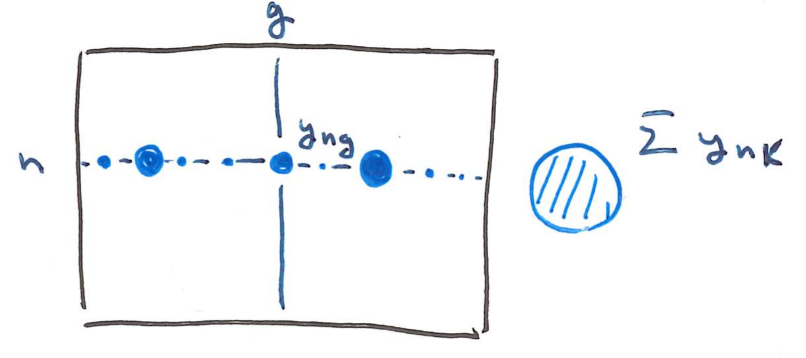
The \(\frac{1}{2}\) and \(1\) offfsets help us avoid \(\log\left(0\right)\), which is undefined. Besides this, the fraction inside of the log converts each sample into something like a relative frequency of gene \(g\) in sample \(n\) (it would be exactly this without the offsets). This removes differences in sequencing depths. The \(10^6\) is where the “per-million” name comes from. Finally, by taking the log transformation, we convert discrete counts into a continuous scale where the normal distribution assumption is more believable.
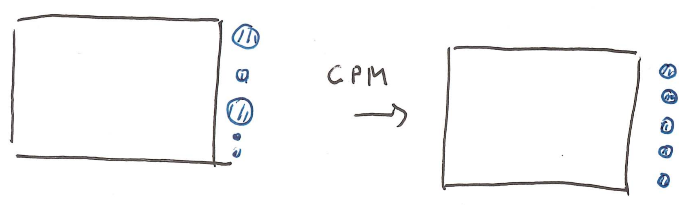
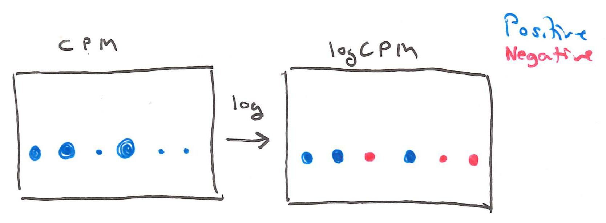
The three genes in Figure 6 are shown before and after applying the CPM transformation. The data are described in more detail in the code example below. For XIST, the Gaussian approximation makes much more sense after the transformation.
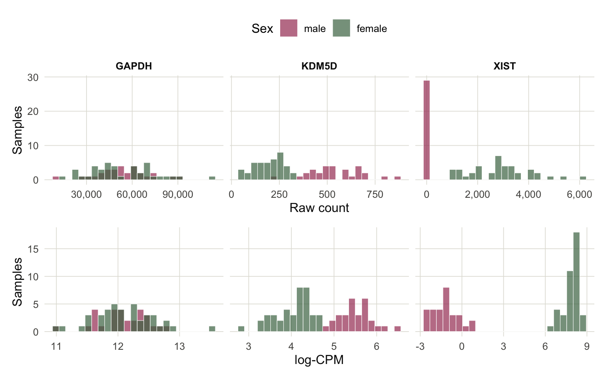
Figure 6 At this point, we can, in principle, fit a linear model where the experimental factors are features \(x_{n}\) and the transformed gene expression is the response \(y_n\).
But there are still issues. When we convert to frequencies, we’re losing a meaningful information about the precision of our measurements. Two samples can have exactly the same logCPM value for a gene but different total counts. The total count information is important because a sample with deep sequencing is measured more accurately than one with shallow sequencing.
This shows up in the spread of the groups after the logCPM transformation has been applied. For example, in Figure 75, the logCPM transformation has put all the genes on roughly the same scale. Instead of ranging from 0 to 40,000, they’re in roughly the range from -5 to 10.
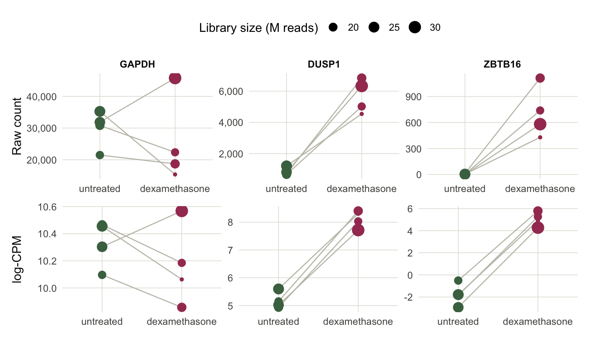
Figure 7 But notice that the ZBTB16 gene has more variation within each group compared to the other two genes. In statistical language, this is called the residual variation (after residualizing out the group effect), and it happens to be a general phenomenon that genes with smaller sequencing depth also have larger residual variation after the logCPM transformation.
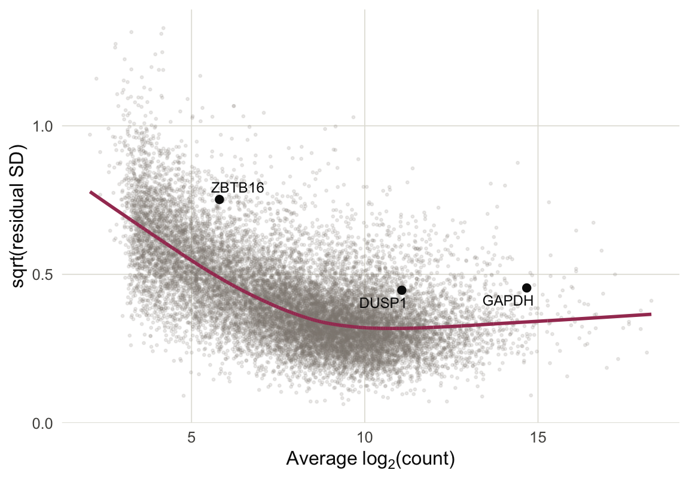
Figure 8 Limma uses this trend to reweight the observations. The curve above was learned using gene-level quantities. But we can compute the quantity on the x-axis for any count \(y_{ng}\), and this suggests an associated weight, called the precision weight. Intuitively, if an observation comes from a sample with deep sequencing, it will have higher precision.
These weights can then be incorporated into linear models through weighted linear regression. For example in the simple case where we’re simply looking at the difference between two groups, we would compute a weighted average instead of a plain average.
Exercise: What are some visual and numerical checks you could implement to decide whether normalization is necessary in your dataset? If you do apply normalization, what are some checks you could carry out to see whether the outputs make sense?
Multiple Hypothesis Testing
At this point, we could imagine applying a linear model to every single genomic feature. We would have a separate null hypothesis associated with each gene. We would reject those where the groups means seem different (controlling for other factors). The resulting list of significant genes would be the ones that we prioritize for follow-up analysis.
This doesn’t quite work, though. It’s easiest to understand through a small example. I’ve simulated a thousand hypothetical genes from two groups. For every gene, I simulated variances \(\sigma_{g}^{2}\) from a uniform distribution between 0.5 and 2, so some have expression that stay closer to their mean than others. For 50 of these genes, I introduce a true difference of 2.5 between the means6. In the language of the two-groups model above, \(\mu_{A} = 0, \mu_{B} = 2.5\). I sample only two replicates per group (four samples total).
Figure 9a shows the 50 genes with the most significant \(t\)-statistics. Only 11 are actually related to the treatment! Of the top 10 genes, only two are actually relevant.
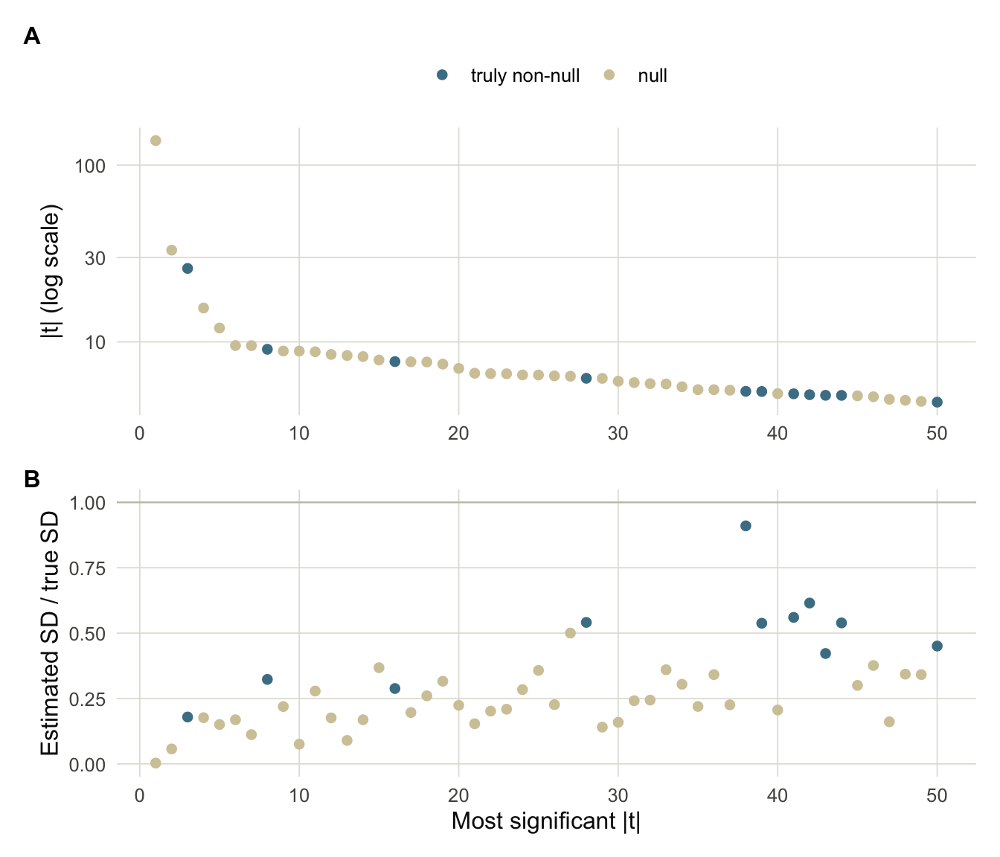
Figure 9 Figure 9b is the critical clue. The genes that appear most significant actually just have estimated variances \(s_{g}^2\) that are smaller than their true variances \(\sigma_{g}^2\), which we know in the simulation, but which we wouldn’t know in reality. The problem is that with small sample sizes, we might have a small empirical variance just by chance, and since the \(t\)-statistic divides by \(s_g\), we end up overestimating the associated genes’ significance.
\[ t_{g} = \frac{\bar{y}_{A,g} - \bar{y}_{B,g}}{s_{g}\sqrt{1/N_A + 1/N_B}}. \]
When we observe a small \(s_{g}^2\), it could either be because the gene truly has small variation around its mean, or we just got replicates that are unusually close to each other. The major insight of limma is that the other genes can help us tell which of these two situations we are in.
To this end, suppose we had a prior \(H\) for the genewise variances, \[ \sigma_{g}^{2} \overset{\text{iid}}{\sim} H \] This captures our prior knowledge about how much variation is expected in each group. Since the distribution of \(s_{g}^2\) given \(\sigma_{g}^{2}\) has a known form, it is possible to compute a posterior for each gene \(g\), \[ p\left(\sigma_{g}^2 \vert s_{g}^2\right). \] This posterior gives a better estimate of \(\sigma_{g}^2\) which we can use in place of \(s_{g}^2\). Figure 10 shows the prior-to-posterior update for gene YWHAB, which had the smallest estimated \(s_{g}^2\).
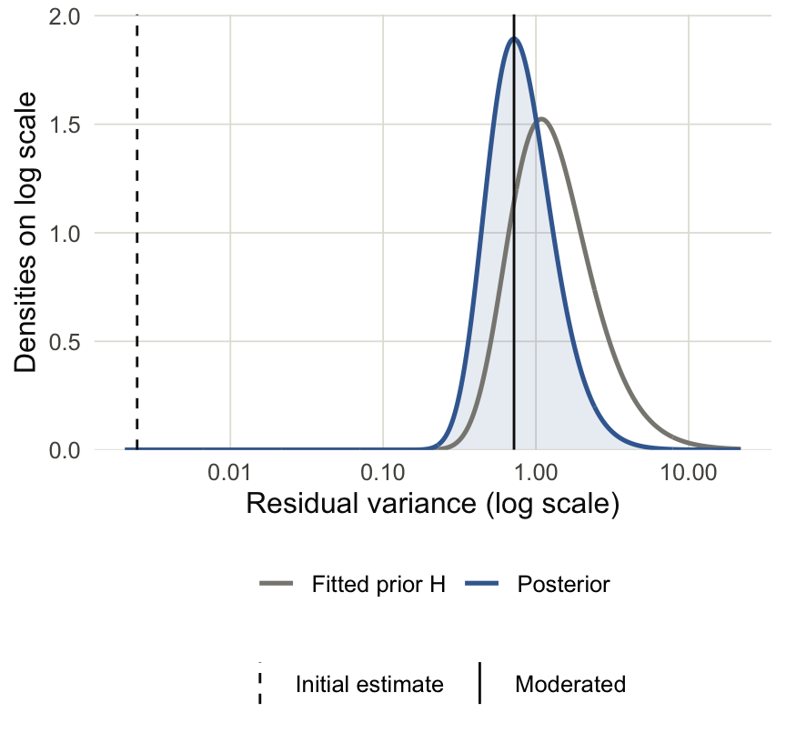
Figure 10 How did limma choose the prior \(H\)? It turns out that it is possible to estimate \(H\) by looking at the \(s_{g}^2\) across all the genes. This is what is meant by limma performing empirical Bayes. Compared to standard Bayesian inference, where the prior must simply be assumed, we can use the many parallel genes to form an “empirical” prior \(\hat{H}\), which can then flow into the posterior calculations.
A consequence of these updated \(\sigma_{g}^2\) estimates is that the new, “moderated” \(t\)-statistics are less affected by small values of \(s_{g}^2\). Looking across all genes, Figure 11 shows that the \(t\)-statistics are shrunken towards zero. The genes that are shrunken the most are those whose \(s_{g}^2\) were much lower than expected after estimating the prior variance \(H\).
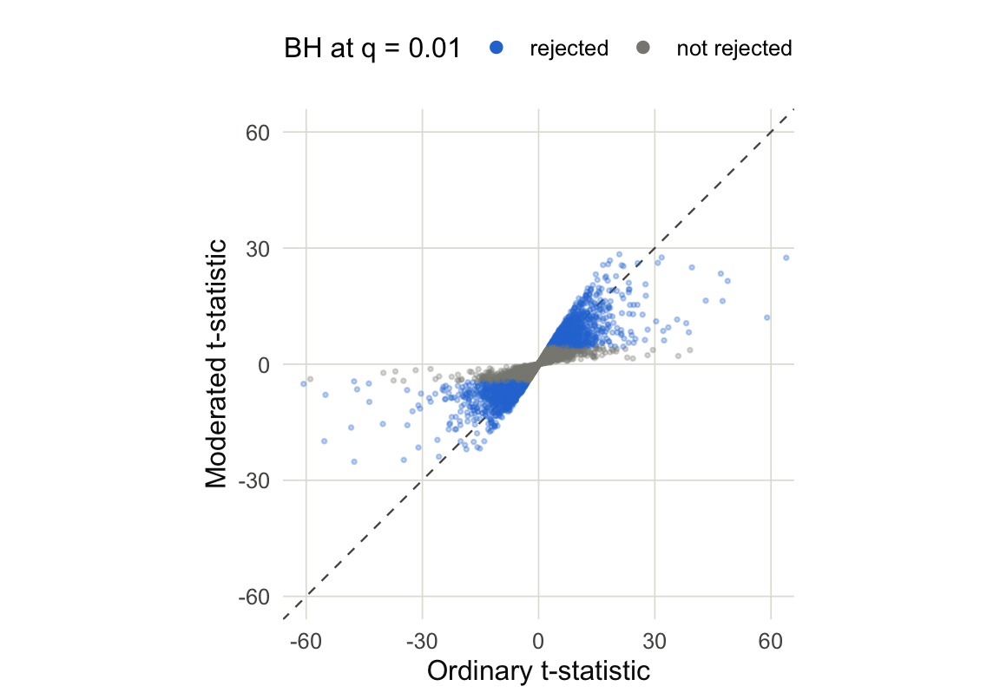
Figure 11 When using these \(t\)-statistics instead of the original ones, we have fewer false positives among our top-ranked genes. For example, returning to our earlier simulation, we can see that ranking using the moderated \(t\)-statistics leads to many fewer false positives and is nearly as good as using the ground truth standard deviation.
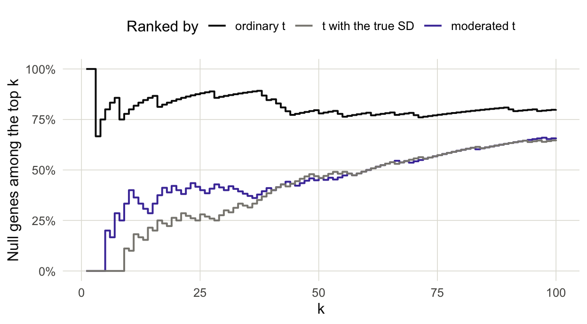
Figure 12 There’s one last statistical consideration. If we use the usual hypothesis testing cutoffs then we’re liable to return many false positives…

The problem is that the hypothesis testing cutoffs were originally designed so that, under the null hypothesis, the probability of a false positive is \(\alpha\) (usually 0.05). But in modern biology we test many hypothesis, and the probability of encountering at least one false positive grows with the number of tests.
To deal with this phenomenon (Benjamini and Hochberg 1995) had the idea that instead of controlling the probability of a single false positive, we should control the proportion of false positives among all rejections. Formally, let \(H_{1}, \dots, H_{G}\) represent the null hypothesis for the \(G\) genes. Suppose we obtain p-values \(p_{1}, \dots, p_{G}\) and that \(R\) of these \(p\)-values are smaller than \(\alpha\). The \(R\) rejections are the discoveries we would comment on in our paper. Among them, suppose that \(V\) are false discoveries (in practice, we would never know this). The quantity
\[ \widehat{\mathrm{FDP}} = \frac{V}{R\vee 1} \] is the empirical false discovery proportion in this one experiment and its expected value across many experiments with the same underlying distribution is called the false discovery rate, \[ \mathrm{FDR} = \mathbb{E}\left[\widehat{\mathrm{FDP}}\right] \]
In addition to introducing this quantity, Benjamini and Hochberg proposed a way of adjusting the \(p\)-value cutoffs \(\alpha_{k}\) so that if we reject hypotheses using these cutoffs instead of \(\alpha\), we would provably control the false discovery rate. Their procedure is now called the Benjamini-Hochberg (or BH) procedure, and the thresholds \(\alpha_{k}\) are plotted as the magenta line in panel (B) below.
- Sort the \(G\) p-values in increasing order, \[ p_{(1)} \le p_{(2)} \le \cdots \le p_{(G)} \] and denote the associated nulls by \(H_{(1)}, \dots, H_{(G)}\).
- Fix an FDR target \(q\)7 and define new thresholds \(\alpha_{k} = \frac{kq}{G}\). This means that the smallest p-value is compared to the strictest threshold, the next smallest is compared to a slightly more lenient one, etc.
- Find the largest \(k\) where \(p_{(k)} \le \alpha_{k}\), and reject \(H_{(1)}, \dots, H_{(k)}\). If there is no such \(k\), don’t reject anything.
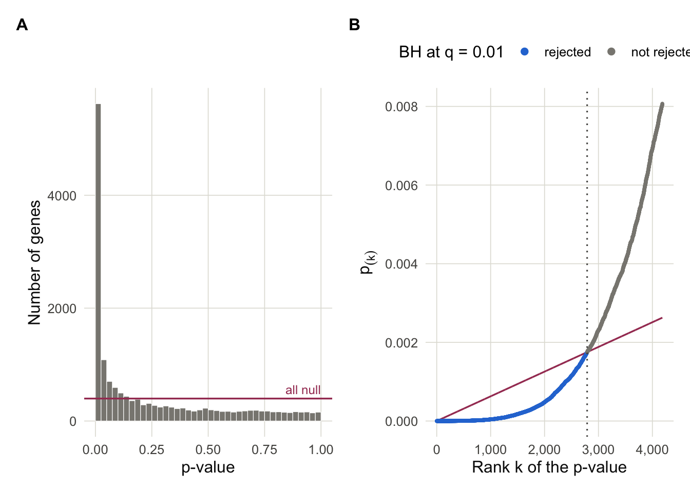
This procedure can be justified through the histogram of \(p\)-values, like those in panel (A) above. These \(p\)-values can be intuitively understood as a mixture of those from significant genes (large peak with small \(p\)-values) and those from nulls (everything else). Let \(\pi_{0}\) denote the histogram density after the peak levels off. When many of the hypotheses are null, then the peak would be smaller and \(\pi_{0}\) would be larger8.

Normalize the histogram to have the total area of 1, so each gene has weight \(\frac{1}{G}\). If we let \(R\left(t\right)\) give the total number of rejections below a threshold \(t\), the corresponding area to the left of this histogram is \(\frac{R\left(t\right)}{G}\).

How much of this area do we think comes from the null hypotheses? A reasonable estimate is \(\pi_{0}t\).

So, a good estimate of the false discovery rate is the second area divided by the first,
\[ \mathrm{FDR}\left(t\right) \approx \frac{G\pi_{0}t}{R\left(t\right)}. \]
How might we choose \(t\) so that the FDR is controlled below a target level \(q\)? Suppose we set \(t\) to the \(k^{th}\) largest \(p\)-value, \(p_{\left(k\right)}\). Then we would have \(k\) rejections, i.e. \(R\left(t\right) = k\). Substituting this into \(t\) and \(R\left(t\right)\), we find,
\[ \begin{align} \mathrm{FDR}\left(t\right) \leq q \iff \frac{G \pi_{0} p_{\left(k\right)}}{k} \leq q \iff p_{\left(k\right)} \leq \frac{kq}{G \pi_{0}}. \end{align} \]
Approximating9 \(\pi_{0} \approx 1\) (i.e., most genes are null), the right hand side is \(\alpha_{k}\). So, if we want to reject as many hypothesis as possible while controlling the FDR below \(q\), then we should choose the largest \(p_{\left(k\right)} \leq \alpha_{k}\). This is exactly the BH procedure.
This isn’t exactly a proof, but hopefully it gives some intuition about where the BH procedure came from. Finally, while it’s nice to know where the multiple testing correction comes from, we never have to compute the Benjamini-Hochberg thresholds ourselves. When we run
topTable, limma automatically performs this multiple testing correction.
Extra Code Example
Next we’ll study data from Pickrell et al. (2010), who gathered RNA-seq data from lymphoblastoid cell lines across 69 HapMap donors. Later research has focused on sex differences in gene expression, which we’ll analyze here. Compared to the motivating airway example, the sample size is much larger. This makes the moderated \(t\)-statistics less essential, as we will see.
library(tweeDEseqCountData) data(pickrell1) counts <- exprs(pickrell1.eset) samples <- data.frame(sex = factor(pickrell1.eset$gender), row.names = colnames(counts)) genes <- data.frame(gene_id = rownames(counts), row.names = rownames(counts)) dge <- DGEList(counts = counts, samples = samples, genes = genes) dgeAn object of class "DGEList" $counts NA18486 NA18498 NA18499 NA18501 NA18502 NA18504 NA18505 NA18507 ENSG00000127720 6 32 14 35 14 10 23 19 ENSG00000242018 20 21 24 22 16 13 11 6 ENSG00000224440 0 0 0 0 0 0 0 0 ENSG00000214453 0 0 0 0 0 0 0 0 ENSG00000237787 0 0 1 0 0 1 0 0 NA18508 NA18510 NA18511 NA18516 NA18517 NA18519 NA18520 NA18522 ENSG00000127720 16 10 32 30 18 15 13 30 ENSG00000242018 19 19 25 18 40 32 25 27 ENSG00000224440 0 0 0 0 0 0 0 0 ENSG00000214453 0 0 0 0 0 0 0 0 ENSG00000237787 0 0 0 0 0 0 0 0 NA18523 NA18852 NA18853 NA18855 NA18856 NA18858 NA18861 NA18862 ENSG00000127720 5 20 11 12 18 23 22 37 ENSG00000242018 18 20 16 28 4 19 11 19 ENSG00000224440 0 0 0 0 0 0 1 0 ENSG00000214453 0 0 0 0 0 0 0 0 ENSG00000237787 0 0 0 0 0 0 0 0 NA18870 NA18871 NA18909 NA18912 NA18913 NA18916 NA19093 NA19098 ENSG00000127720 23 15 21 15 8 29 22 17 ENSG00000242018 16 19 18 7 40 20 28 34 ENSG00000224440 0 0 0 0 0 0 0 0 ENSG00000214453 0 0 0 0 0 0 0 0 ENSG00000237787 0 0 0 0 0 0 0 0 NA19099 NA19101 NA19102 NA19108 NA19114 NA19116 NA19119 NA19127 ENSG00000127720 22 35 6 36 10 23 6 16 ENSG00000242018 27 37 5 21 15 32 8 12 ENSG00000224440 0 0 0 0 0 0 0 0 ENSG00000214453 0 0 0 0 0 0 0 0 ENSG00000237787 0 1 0 0 0 0 0 0 NA19128 NA19130 NA19131 NA19137 NA19138 NA19140 NA19143 NA19144 ENSG00000127720 17 35 17 15 16 13 14 6 ENSG00000242018 18 14 35 20 31 11 32 56 ENSG00000224440 0 0 0 0 0 0 1 0 ENSG00000214453 0 0 0 0 0 0 1 0 ENSG00000237787 0 1 0 1 0 0 0 0 NA19147 NA19152 NA19153 NA19159 NA19160 NA19171 NA19172 NA19190 ENSG00000127720 11 31 14 3 13 21 13 12 ENSG00000242018 16 15 18 44 26 20 8 12 ENSG00000224440 0 0 0 0 0 0 0 0 ENSG00000214453 0 0 0 0 0 0 0 0 ENSG00000237787 0 0 0 0 0 0 0 0 NA19192 NA19193 NA19200 NA19201 NA19203 NA19204 NA19209 NA19210 ENSG00000127720 10 11 13 22 12 23 12 11 ENSG00000242018 28 8 11 27 16 18 38 32 ENSG00000224440 0 0 0 0 0 0 0 0 ENSG00000214453 0 0 0 0 0 0 0 0 ENSG00000237787 3 0 0 0 0 0 0 0 NA19222 NA19225 NA19238 NA19239 NA19257 ENSG00000127720 19 27 35 50 23 ENSG00000242018 6 13 12 22 26 ENSG00000224440 0 0 0 0 0 ENSG00000214453 0 0 1 0 0 ENSG00000237787 0 0 3 0 0 38410 more rows ... $samples group lib.size norm.factors sex NA18486 1 8042929 1 male NA18498 1 14133442 1 male NA18499 1 8888475 1 female NA18501 1 8877946 1 male NA18502 1 13818485 1 female 64 more rows ... $genes gene_id ENSG00000127720 ENSG00000127720 ENSG00000242018 ENSG00000242018 ENSG00000224440 ENSG00000224440 ENSG00000214453 ENSG00000214453 ENSG00000237787 ENSG00000237787 38410 more rows ...As before, the first step is to filter genes that have low expression. This reduces the data from 38410 to 18189 rows (we have so many genes because RNA-seq picks up on the noncoding RNAs).
keep <- filterByExpr(dge, group = dge$samples$sex) dge <- normLibSizes(dge[keep, ])Next we apply the logCPM normalization and recover expression weights. This depends on the
designbecause the residual variances are computed after the initial regression ontosex.design <- model.matrix(~sex, data = dge$samples) v <- voom(dge, design)The weights and original design are passed to the linear model, and the variances are shrunk towards the prior mean in the empirical Bayes step.
fit_raw <- lmFit(v, design) fit <- eBayes(fit_raw)Plotting the original vs. moderated \(t\)-statistics shows that, with more samples, the empirical bayes shrinkage step has less effect than it did in the airway dataset.
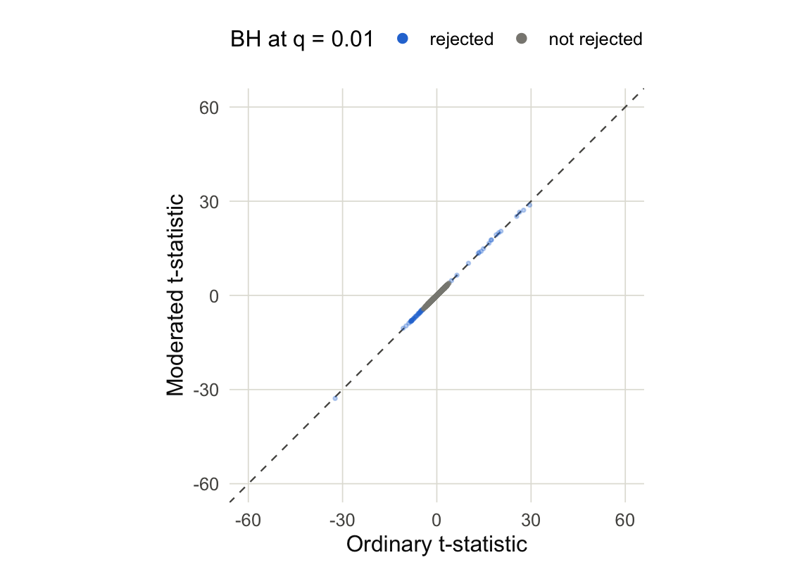
Figure 13 Looking up10 the most significant genes, we see that the first and third are Y-linked and the second is associated with X inactivation.
topTable(fit, coef = "sexmale")gene_id logFC AveExpr t P.Value ENSG00000157828 ENSG00000157828 3.279797 3.2532194 26.51460 9.557738e-39 ENSG00000229807 ENSG00000229807 -9.870080 3.7534964 -32.82863 6.945854e-45 ENSG00000099749 ENSG00000099749 4.258610 0.2597763 27.13339 2.124809e-39 ENSG00000240326 ENSG00000240326 5.117366 -2.3026091 28.75200 4.739543e-41 ENSG00000233864 ENSG00000233864 4.899016 -0.6087085 25.15769 2.864200e-37 ENSG00000198692 ENSG00000198692 2.397292 2.6257697 20.44090 1.345501e-31 ENSG00000213318 ENSG00000213318 4.300352 2.2105576 19.31123 4.248931e-30 ENSG00000129824 ENSG00000129824 2.780009 4.6569064 17.59789 1.047233e-27 ENSG00000131002 ENSG00000131002 5.442228 -0.2258336 19.96277 5.704941e-31 ENSG00000183878 ENSG00000183878 1.877358 2.6881117 16.60785 2.954160e-26 adj.P.Val B ENSG00000157828 4.346143e-35 73.88672 ENSG00000229807 1.263381e-40 68.25105 ENSG00000099749 1.288272e-35 66.09101 ENSG00000240326 4.310378e-37 62.48315 ENSG00000233864 1.041939e-33 59.81065 ENSG00000198692 4.078886e-28 59.22512 ENSG00000213318 9.660475e-27 55.10891 ENSG00000129824 1.904813e-24 51.81093 ENSG00000131002 1.482388e-27 51.02045 ENSG00000183878 4.884838e-23 48.18882
Learning More
All the figures in this notebook are created using code that’s directly executed inline. All the statistical quantities, like the moderated t-statistics and the prior and posterior variances, were extracted from limma. You can rerun our source code to get hands-on experience, and I encourage you to try making these kinds of plots on your own data.
You can find many more code examples in the Limma online manual.
Limma is just one strategy for multiple testing with RNA-seq data. Another Bioconductor-based approach is DESeq2 (Love et al. 2014). It applies generalized linear models rather than linear models, which is a bit more conceptually advanced. But the software is also well developed and the key concepts like normalization, empirical Bayesian shrinkage, and multiple testing all carry over.
The simulation in the multiple testing section was inspired by a similar one in (Ji and Liu 2010). It also motivates a Bayesian approach to sharing information across genes. A deep Empirical Bayesian analysis of the limma is given by (Ignatiadis and Sen 2025). What the original limma paper presents as a somewhat ad hoc recipe this paper shows is an immediate consequence of some basic (and reasonable) statistical assumptions.
Chapter 6 of (Holmes and Huber 2019) gives a great introduction to multiple testing in high-throughput omics, and it’s available for free online.
References
Benjamini, Yoav, and Yosef Hochberg. 1995. “Controlling the False Discovery Rate: A Practical and Powerful Approach to Multiple Testing.” Journal of the Royal Statistical Society Series B: Statistical Methodology 57 (1): 289–300. https://doi.org/10.1111/j.2517-6161.1995.tb02031.x.
Holmes, Susan, and Wolfgang Huber. 2019. Modern Statistics for Modern Biology. Cambridge University Press.
Ignatiadis, Nikolaos, and Bodhisattva Sen. 2025. “Empirical Partially Bayes Multiple Testing and Compound Χ2 Decisions.” The Annals of Statistics 53 (1). https://doi.org/10.1214/24-aos2431.
Ji, Hongkai, and X Shirley Liu. 2010. “Analyzing’omics Data Using Hierarchical Models.” Nature Biotechnology 28 (4): 337–40.
Love, Michael I, Wolfgang Huber, and Simon Anders. 2014. “Moderated Estimation of Fold Change and Dispersion for RNA-Seq Data with DESeq2.” Genome Biology 15 (12): 550.
Footnotes
Ideally \(s^2 \approx \sigma^2\)↩︎
A \(t\)-distribution with eight degrees of freedom.↩︎
Stephen Stigler lists this as #6 in his “7 Pillars of Statistical Wisdom”.↩︎
This is the transpose of the format used in
SummarizedExperiment, but it is more common to write in this format in statistics.↩︎From the airway dataset above.↩︎
The rest have means all equal to zero.↩︎
This is the analog of \(\alpha\) in ordinary hypothesis testing↩︎
In fact, \(\pi_{0}\) exactly corresponds to the proportion of null hypothesis. The horizontal pink line in panel (A) is the case that all genes are null and \(\pi_{0} = 1\).↩︎
In fact, \(\pi_{0}\) is always less than one, so replacing it with one only makes our FDR estimate more conservative.↩︎
The source data uses the hg19 reference genome, which is why the ENSEMBL IDs look different.↩︎